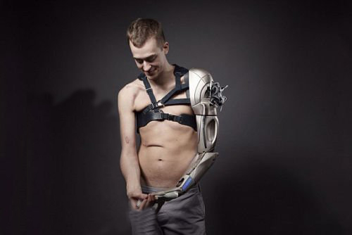

BionicWorkplace
Human-robot collaboration with artificial intelligence
Alongside serial production, there is a trend in industry towards the customisation of products. A key role
when it comes to production in batch size 1, besides the digital networking of entire installations, is also played by
systems capable of learning using artificial intelligence and robots that work hand in hand with humans. In the
BionicWorkplace, all these requirements are combined in a future-oriented working environment.

BionicCobot: robot arm with human movement patterns
A central part of the working environment is the BionicCobot. The pneumatic lightweight robot is based on the human arm in terms of its anatomical construction and – like its biological model – solves many tasks with the help of its flexible and sensitive movements. Due to its flexibility and intuitive operability, the BionicCobot can interact directly and safely with people. In doing so, it supports workers doing monotonous jobs and takes over tasks that are dangerous for humans.
Intuitive operating concepts for safe interaction
In the BionicWorkplace, the bionic robot arm works together with numerous assistance systems and peripheral devices, which are networked and communicate with each other. At the same time, artificial intelligence and machine learning methods turn the BionicWorkplace into a learning and anticipative system that continuously optimises itself.
The whole workplace is ergonomically designed and can be adapted to people individually down to the lighting. At the centre of the worker’s field of vision is a large projection screen. It supplies the worker with all the relevant information and reacts dynamically with its contents to the relevant requirements. All around the projection screen, various sensors and camera systems are fitted, which constantly record the positions of the worker, components and tools. In this way, a human can directly interact with the BionicCobot and control it using movement, touch or speech.

Recording the worker’s position using wearables
The system recognises the worker and their movements by their special work clothing. These so-called wearables consist of a long-sleeved top, which is equipped with inertia sensors, and a work glove with integrated infrared markers. With the help of the recorded sensor data, the BionicCobot is able to hand over objects to its human colleague with pinpoint accuracy and move out of their way if necessary – an essential requirement for direct collaboration between humans and robots.
Machine learning optimises work flow
The intelligent software simultaneously processes all the camera images, positional data and inputs from the various peripheral devices. It uses all this information to derive the optimal program sequence. The system then divides the tasks expediently to the robot and other tools in order to give the human the best support whilst working.
With every action solved, the system learns something new. This creates a so-called semantic map that grows continuously. Along the network paths, the stored algorithms constantly draw dynamic conclusions. As a result, a controlled, programmed and set sequence gradually turns into a much freer method of working.

Remote manipulation via virtual-reality goggles
Another element of the intuitive operating concept is remote manipulation. For this purpose, a 3D stereo camera with a viewing angle of 180 degrees records the whole working space. At the same time, the worker, who is spatially separated, wears virtual-reality goggles besides the textile wearables. The worker can use these to access the images from the camera in real time and follow them. In this way the robot can be controlled in case of spatial separation or from a safe distance.
Learned knowledge building blocks applicable worldwide
By means of intelligent workplaces capable of learning, such as the BionicWorkplace, and the use of multifunctional tools, collaboration between humans and machines will be even more intuitive, simple and efficient in future. Knowledge building blocks and new skills, once learned, can be limitlessly shared and made available on a global scale. It would therefore be possible in future to set up workplaces as a worldwide network with local adaptations, in each case adjusted to the local individual tasks and customer requirements.

A possible future scenario that combines all the key elements of robotics: the BionicWorkplace interacting with the BionicMotionRobot and a Robotino®.